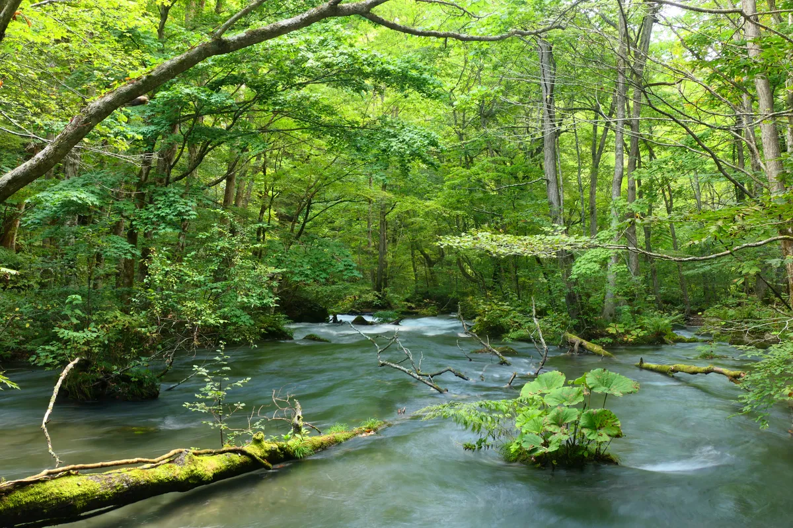
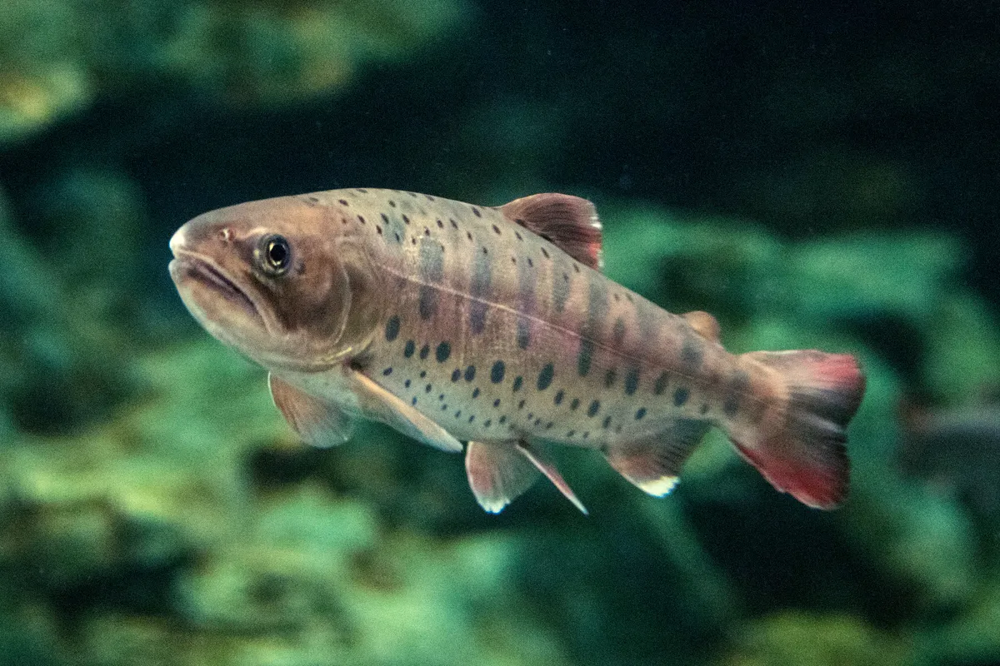
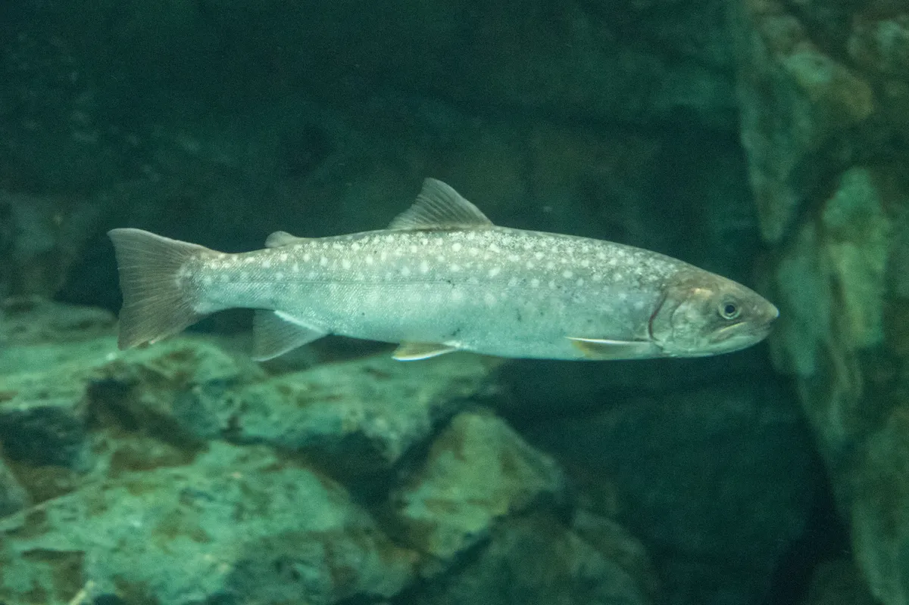
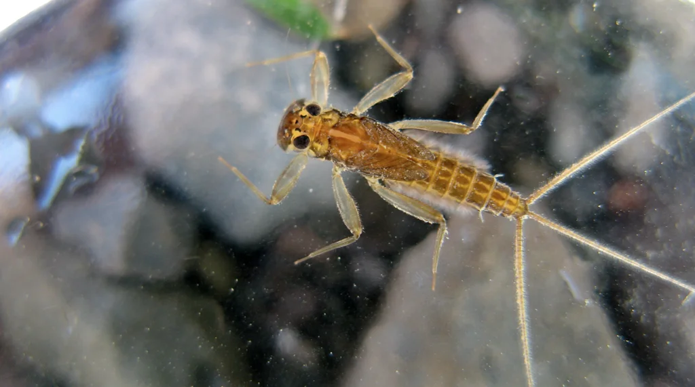

日本の典型的な渓流景観 (奥入瀬渓流, 青森)。落ち込み・瀬・淵が連続する。
MaedaAkihiko, Wikimedia Commons,
CC BY-SA 4.0
このガイドの位置付け: 在野研究者・自家採集者向けに、渓流魚 (主にサケ科) の餌・仕掛け・ポイント読み・場所・釣行報告・学術論文からの行動学的知見までを一枚に集約。漁業権の対象であるため、必ず各漁協の遊漁券を購入し、解禁期間とサイズ規制を守ること (詳細は
関東漁業規則ガイド を併読)。
1. 渓流魚 — 対象魚種
「渓流魚」は サケ目サケ科 の冷水性魚を中心とする釣り対象魚の総称。河川の上中流〜源流に棲息し、流下昆虫を餌に縄張りを構えて生活する。
ヤマメ Oncorhynchus masou masou

ヤマメ (
Oncorhynchus masou)。Σ64, Wikimedia Commons,
CC BY 4.0分布: 北海道・本州 (太平洋岸は神奈川県以北、日本海岸は山口県まで)。アマゴと地理的に棲み分け。
特徴: サクラマスの河川残留型。体側に楕円形のパーマーク (8〜10個)。瀬を好み流れの強い場所で活発に捕食する。
解禁期: おおむね 3月1日〜9月30日 (漁協により異動)。
名物河川: 那珂川 (栃木)、鬼怒川、桂川 (山梨)、奥多摩、丹沢の中津川、信州の犀川支流など。
餌・テンカラ・フライ・ルアー3〜9月
アマゴ Oncorhynchus masou ishikawae
分布: 太平洋岸の神奈川県西部以西〜四国・大分。ヤマメの亜種で 朱点 が体側に散る点が決定的。
特徴: ヤマメと同じく流下昆虫を捕食する縄張り型。降海型はサツキマス。
名物河川: 早川 (神奈川県西部)、酒匂川、大井川、長良川、宮川、四万十川。
餌・テンカラ・フライ・ルアー3〜9月
イワナ (ニッコウイワナ含む) Salvelinus leucomaenis

イワナ (
Salvelinus leucomaenis)。Σ64, Wikimedia Commons,
CC BY 4.0分布: 本州中部以北・北海道。ヤマメよりさらに上流・冷水側を占有。亜種ニッコウイワナ (関東甲信)、ヤマトイワナ (中部・近畿)、エゾイワナ (北海道)、ゴギ (中国地方) と棲み分ける。
特徴: 体側に白い斑点 (亜種により形が異なる)。流れが緩く岩陰のある場所を選び、待ち伏せ型の捕食。雑食性が強く、ヤマメより餌の幅が広い (落下昆虫・小魚・ネズミの稚魚まで食う)。
名物河川: 奥多摩源流 (川苔谷・峰谷川)、奥利根・宝川、湯桧曽川、奥秩父・荒川源流、信濃川源流、北上川源流。
餌・テンカラ・ルアー3〜9月
ニジマス Oncorhynchus mykiss
分布: 本来は北米産。日本では明治期から放流が続き、管理釣り場・河川放流魚として全国で釣れる (国立環境研究所「侵入生物DB」掲載の外来種)。
特徴: 体側に虹色の縦帯。引きが強く、ルアーへの反応も良い。流速の速い瀬・落ち込みを好み、ヤマメより低水温耐性が低い。
名物河川: 多摩川支流の奥多摩 (養沢毛鉤専用釣場・川井)、芦ノ湖、銀山湖、桂川下流、本栖湖、丹沢の中津川。
詳細: 個別ガイド ニジマス釣りガイド 参照。
餌・ルアー・フライ通年 (管釣り)
サクラマス・サツキマス O. masou masou (sea-run) / O. m. ishikawae (sea-run)
分布: ヤマメ・アマゴの降海型。海で1年を過ごして産卵期に母川回帰。サクラマスは日本海・北太平洋、サツキマスは伊勢湾・三重〜四国の太平洋岸。
特徴: 50cmを越える銀ピカの大型。本流ルアー・フライの最高峰の一つで、知名度の高い名手も多数 (本流ロッドと長大なリーダー、激しいタフさが要求される)。
解禁期: 3〜6月。河川に上る時期は短く、それぞれの川で「春の数日〜数週」のチャンス。
本流ルアー・フライ3〜6月
オショロコマ Salvelinus malma
分布: 北海道のごく上流のみ。本州には自然分布せず、関東で釣る対象ではない。参考までに記載。
2. 餌 — 川虫・市販餌・ルアー/フライ
渓流魚の主食は水生昆虫の幼虫 (川虫) と陸生落下昆虫。これらの「自然の餌」と「市販餌」を比較しながら使い分ける。
2.1 川虫 (現地調達の主役)

扁平型のニンフ (
Rhithrogena sp., ヒラタカゲロウ科)。瀬の石に張り付く「クリンガー」型。
Dave Huth, Wikimedia Commons,
CC BY 2.0
| 名前 | 正体 | 特徴・刺し方 | 得意な対象 |
|---|
| ヒラタ (ヒラタカゲロウ系ニンフ) | カゲロウ目ヒラタカゲロウ科 Epeorus, Rhithrogena の幼虫 | 薄く扁平で柔らかい。お尻から刺し脇腹に抜く。瀬の石をめくると採れる | ヤマメ・アマゴ・イワナ全般、特に瀬 |
| ピンチョロ (ピンピンチョロ) | カゲロウ目フタオカゲロウ科の幼虫 Cinygmula等。「コカゲロウ」系も含む | ピンピン跳ねる。腹背を軽く押さえて固定し、胴をチョン掛け。動きが餌になる | ヤマメ・アマゴが特に好む |
| クロカワ虫 (黒川虫) | トビケラ目ヒゲナガカワトビゲラ Stenopsyche marmorata の幼虫 | 巣の砂礫を裂いて取り出す。柔らかい腹を背にチョン掛け。匂いが強い | 大型ヤマメ・本流ニジマス・ウグイ |
| キンパク (黄色いカワゲラ) | カワゲラ目 (Plecoptera) 数種の幼虫 | 黄色〜橙色で目立つ。胸の節を背がけ。早春の代表餌 | 解禁直後のヤマメ・イワナ |
| オニチョロ | カワゲラ目大型種 Oyamia, Kamimuria の幼虫 | 体長20mm前後で大きい。背中を縦掛け。アピール力高い | 大物狙い・濁り気味の本流 |
採取: 「川虫網」または網で石をめくって流す。**水苔・木屑と一緒にエサ箱**に入れて湿気を保つと半日は元気。ヒラタは石の裏に張り付くので一枚ずつめくる。冬期と早春は石下にカワゲラ・キンパクが優占し、夏は瀬の表層にコカゲロウ・ピンチョロが多い。
注意: 川虫採取は遊漁券で禁止されている河川がある (那珂川など)。漁業権の対象種に川虫を含む漁協では、現地調達ではなく市販餌を使うこと。神奈川県内水面漁業協同組合連合会の公示や各漁協の規則を確認。
2.2 市販餌
| 餌 | 特徴 | 使い方 |
|---|
| ミミズ (キヂ・キンミミズ) | 定番。釣具屋で購入。匂いが強くニジマス・イワナに効く | 太いものは半切り。チョン掛け or 通し刺し |
| イクラ | サケ卵の塩漬け。ヤマメ・ニジマスの解禁直後に絶大 | 1〜2粒を針に刺す。流すと漁協放流魚に強い |
| ブドウ虫 | ハチノスツヅリガの幼虫。柔らかく食い込み良好 | チョン掛け。1匹で数尾釣れる |
| サシ (ハエの蛆) | 小型・低水温期の食い渋り対策 | 2〜3匹掛け |
| 魚卵 (人工イクラ) | マルキューなどから。色付きで視認性◎ | イクラと同様 |
2.3 ルアー
- スプーン (3〜7g): 渓流の定番。シンプルな形で広範囲を探る。Daiwa Crusader, Smith Pure, Forest Marshall などが定番。
- ミノー (45〜70mm): トゥイッチでヒラ打ちさせて誘う。Smith DD-Panish、Disney Skagit Designs Bowie。
- スピナー (1〜3g): 回転ブレードで誘発。Mepps Aglia、Daiwa Silver Creek。
2.4 フライ・テンカラ毛鉤
- ドライフライ: パラシュート、エルクヘアカディス、ロイヤルウルフ。羽化期に水面下を流れる成虫を模す。
- ニンフ: 水生昆虫幼虫を模した沈むフライ。ゴールドビーズヘア、ファサントテイル。
- テンカラ毛鉤: 逆さ毛鉤 (蓑毛が前方を向く) と順毛鉤。「魚に何を食わせるか」より「何に反応するか」を探る思想で、フライより簡素。
3. 仕掛け — エサ・テンカラ・フライ・ルアー
3.1 ミャク釣り (餌釣り) の標準仕掛け
渓流のエサ釣りはウキを使わず、目印で流れと当たりを見るミャク釣りが基本。
┌─ 竿 (5.4〜6.4m渓流竿、硬調〜中硬調)
│
├─ 天上糸 (フロロ 0.6〜0.8号 / 編糸) ─ 1〜1.5m
│ │
│ ├── 目印 (3〜5個、5〜10cm間隔)
│ │
│ ├─ 水中糸 (フロロ 0.15〜0.4号) ─ 2.5〜3m
│ │
│ ├─ ガン玉 (B〜3B、ハリスから20〜40cm上)
│ │
│ └─ ハリス兼用 / 別ハリス (フロロ 0.15〜0.3号) ─ 30〜60cm
│ │
│ └─ 針 (渓流バリ 5〜7号 or ヤマメ針)
| パーツ | 選び方 |
|---|
| 竿 | 5.4m or 6.1m が定番。源流・小渓流は4.5m、本流ヤマメは7〜8m。「硬調」だと細糸が切られにくい |
| 天上糸 | 道糸が穂先に絡むのを防ぐ。編み糸 (PE) または太めのナイロン |
| 水中糸 | 渓流魚の警戒心が強いため0.15〜0.25号のフロロが標準。沈みやすく根擦れに強い |
| 目印 | 3〜5個を5〜10cm間隔。水面より上に位置させ流れに乗ってトレースさせる。当たりは目印の不自然な動きで取る |
| オモリ | 底スレスレを流すのが鉄則。ガン玉B〜3B。流れが強ければ4B〜5B、緩い淵では3〜5号の極小 |
| 針 | ヤマメ針 5号 (川虫)、6〜7号 (ミミズ・イクラ)。イワナはやや太軸 |
3.2 テンカラ仕掛け
日本古来の毛鉤釣り。リールを使わず延べ竿に直接ラインを結ぶ。シンプル極まる「竿・ライン・ハリス・毛鉤」の4点で構成。
┌─ テンカラ竿 (3.3〜3.9m、軟調〜中硬調)
│
├─ ライン (テーパー / レベル / フロロ3〜4号) ─ 竿と同長 (3〜4m)
│
└─ ハリス (フロロ 0.6〜1号) ─ 1〜1.5m
│
└─ 毛鉤 (#10〜#14)
- テーパーライン: 先細でフライに近い感覚。投げやすい初心者向き。
- レベルライン: 同じ太さのフロロ。風に強く操作性◎。中級以上で主流。
- 毛鉤: 逆さ毛鉤は蓑毛が前方を向き、水中で広がって浮力を生む。順毛鉤は通常のドライ系。
3.3 フライフィッシング仕掛け
リール ─ バッキング ─ フライライン (#3〜#5)
│
└─ リーダー (テーパー、9ft / 4X〜6X)
│
└─ ティペット (5〜7X、フロロ or ナイロン)
│
└─ フライ (#10〜#18)
- ロッド: 7'6"〜8'6" の#3〜#5 が渓流標準。狭い渓流ほど短く軽く。
- ライン: 浮くWF (Weight Forward) フローティングが基本。沈める場合はシンキングティップ。
- リーダー/ティペット: 9〜12ft、5X〜6X が標準。神経質な大型は7Xまで落とす。
3.4 渓流ルアー仕掛け
渓流ベイト or スピニング (4'8"〜6'6", UL〜L)
│
└─ メインライン (PE 0.3〜0.6号 / フロロ4〜6lb)
│
└─ ショックリーダー (フロロ4〜8lb) ─ 50〜100cm
│
└─ ルアー (3〜7g スプーン / 45〜70mm ミノー)
4. ポイント (居場所) の読み方
渓流魚は流れに対して頭を上流側に向け、流下する餌を待ち受ける (drift feeding)。「魚がいる場所」=「楽に長く滞在できて、かつ餌が流れてくる場所」。これを読めるかが釣果を決める。
4.1 ポイントの基本構造
| ポイント | 読み | 性質 | 魚種 |
|---|
| 瀬 | せ | 水流が石に当たる速い流れ。浅瀬・早瀬・荒瀬と段階あり。酸素量が多く活性が高い | ヤマメ・アマゴ (遊泳力強い) |
| 淵 | ふち | 底がえぐれた水深ある緩い流れ。大型魚が定着 | 大ヤマメ・イワナ・ニジマス |
| 巻き返し / 反転流 | まきかえし | 大岩や岸の張り出しで流れが反転して渦巻く場所。流下物が集まる「魚の食堂」 | 全魚種の一級ポイント |
| 流心 | りゅうしん | 流れの最も強いライン | その脇のヨレが狙い目 |
| ヨレ (モミアワセ) | — | 速い流れと遅い流れの境目。シワ状に水面が乱れる。捕食ポジションの定番 | 全魚種の一級ポイント |
| 落ち込み | おちこみ | 段差や小滝の真下。泡が立つ白泡 (バブルライン) の脇 | イワナの定番 |
| 瀬尻 / ヒラキ | せじり | 瀬から淵に移行する境目。流下物が減速して集まる | 夏のヤマメ・アマゴ |
| 流れ込み | ながれこみ | 支流や沢が本流に注ぐ合流点。冷水と餌が同時に供給される | 盛夏のヤマメ・イワナ |
| 倒木・岩陰・テトラ | — | 身を隠す物理構造。「ストラクチャー」 | 大型イワナ |
4.2 一般的な棲み分け
[源流] ←━━━━━━━━━━━━━━━━━━━━━━━━━━━━━━━━━ [里川] [本流]
イワナ ヤマメ/アマゴ ニジマス (放流)
(冷水・緩流) (冷水〜中水温・速流) (中水温・速流)
落ち込み・淵 瀬・ヨレ・瀬尻 瀬・ヨレ・流心脇
イワナは水温15℃以下が快適、ヤマメは10〜18℃が活性帯。盛夏に下流側に取り残されたヤマメは渇水・高水温で死亡しやすく、上流の冷水に避難する (thermal refuge)。
5. 釣り方 — 実技
5.1 ミャク釣り基本
- 下流から上流へ釣り上がる。渓流魚は上流を向いているため、後方 (下流) から接近すると気付かれにくい。
- 立ち位置を低く。膝をついて影を落とさない。偏光グラスで水面下の動きを確認。
- 仕掛けを上流側に振り込む。流れに対して仕掛けを「自然に流す」=ナチュラルドリフト。
- 底スレスレを流す。オモリで底を叩く感触が伝わるくらい。流速とオモリのバランスが命。
- 目印を凝視。流速より目印が遅れたら/止まったら/速くなったら即合わせ。竿先を5〜10cm上げる軽い合わせで十分。
- 1ポイントは3〜5投で見切る。粘らずランガン (移動) で次のポイントへ。
渓流の鉄則: 「ナチュラルに流す」「打ち返しを早く」「同じポイントに留まらない」「魚を抜き上げる時は岸辺に手早く」。
5.2 テンカラ釣りの実技
- 毛鉤は3秒流せばOK: テンカラの哲学は「反応する魚を探す」。長く流さず、3秒流して当たらなければ次のポイントへ。
- 水面直下を狙う: 着水後、表面ギリギリを流す or 軽く沈める。
- 誘い: 竿先を小刻みに動かして毛鉤を「生き物のように」演出 (誘い) する。
- 合わせ: 水面のかすかな波紋・反転で合わせる。視覚で取る釣り。
5.3 ルアー釣りの実技
- キャスト: ストラクチャーの上流10〜30cmにキャストし、流れに乗せて泳がせる。
- リトリーブ: 流速とほぼ同じか、やや速いペースで巻く。スプーンは「ヒラ打ち」を意識。
- トゥイッチ: ミノーは竿先を小刻みに動かしてイレギュラーアクション。
- ルアーチェンジ: 1ポイントで反応がなければ色やサイズを変える。シルバー→ゴールド→ピンク→チャート。
6. 関東の具体的な釣り場
必ず遊漁券を購入。 各漁協の規則 (解禁日・サイズ・1日尾数・キャッチ&リリース区間) を遵守。詳細は
関東 水産物・漁業規則 総合 参照。
6.1 東京・神奈川 (近郊)
奥多摩 (多摩川源流域)
主な漁協: 奥多摩漁業協同組合。解禁: 3月1日〜9月30日。
支流の代表: 川苔谷 (ヤマメ・イワナ)、峰谷川 (源流イワナ多数)、日原川 (大ヤマメ実績)、丹波川 (ヤマメ・ニジマス)。
アクセス: JR青梅線奥多摩駅から各支流。「峰谷川渓流釣場」は管理釣り場・自然渓流の両方あり。
実績: TSURINEWS報告 (2020年5月、川苔谷): エサ釣りで 26cmイワナ・23cmヤマメ 同日キャッチ。早朝6時入渓、午前中に勝負。
桂川水系 (山梨県東部、相模川源流)
主な漁協: 桂川漁業協同組合。解禁: 3月1日〜9月20日 (本流)。
特徴: 忍野八海から流れる湧水起源のため早春から水温安定、解禁直後から釣果が出る。本流ヤマメ・支流イワナ。
支流: 鶴川・葛野川・笹子川がそれぞれ好ポイント。
放流: 漁協が頻繁に放流を実施 (2025年シーズンも継続)。
丹沢 (神奈川県西部)
主な漁協: 中津川漁業協同組合 (中津川)、酒匂川漁業協同組合 (酒匂川・川音川)、芦ノ湖漁業協同組合 (早川源流)。
魚種: 中津川はヤマメ放流主体、酒匂川・早川源流はアマゴが在来。神奈川県水産技術センターが「丹沢在来ヤマメ」の生息状況調査を継続。
アクセス: 小田急線本厚木・伊勢原から車で30〜60分。
6.2 栃木・群馬
那珂川 (栃木〜茨城)
主な漁協: 那珂川北部漁業協同組合 (大田原市)、那珂川漁協、烏山漁協など。
特徴: 北関東屈指の清流。鮎で有名だが、ヤマメ・イワナの放流も積極的。本流ヤマメ尺超えの名所。
支流: 武茂川、荒川、内川、八溝川 (源流イワナ)。
鬼怒川源流
主な漁協: 鬼怒川漁業協同組合。解禁: 3月20日頃〜。
特徴: 川治・川俣・湯西川温泉郷を含む。本流イワナ・ヤマメ。湯西川は遠野的な秘境感。
奥利根・宝川・湯桧曽川
主な漁協: 利根漁業協同組合、奥利根漁業協同組合。
特徴: 奥利根の大イワナは伝説。湯桧曽は谷川岳の麓で景観も最高。源流域は遡行装備必須。
6.3 山梨・長野
荒川源流 (奥秩父)
主な漁協: 秩父漁業協同組合。解禁: 3月1日〜9月30日。
特徴: 甲武信ヶ岳に発する清流。本流上流域の大滝地区がヤマメ・イワナの主戦場。
信州・千曲川源流〜犀川支流
主な漁協: 佐久漁協、犀川殖産漁協、北安曇漁協など。
特徴: 犀川本流は本流ニジマス・サクラマスのメッカ。千曲川源流はイワナ。
7. 実際の釣行報告 (代表例)
奥多摩・川苔谷でエサ釣り (2020年5月、TSURINEWS報)
- 場所: 川苔谷 (奥多摩町、川乗橋下流〜上流)
- 仕掛け: 渓流竿5.4m、水中糸フロロ0.2号、ヤマメ針6号、ガン玉B〜2B
- 餌: 川虫 (現地のクロカワ虫・ピンチョロ)
- 結果: 26cm イワナ × 1、23cm ヤマメ × 1 を含む 5尾
- 時間帯: 早朝6時入渓〜10時。午後は下山
- ポイント: 落ち込み下のバブルライン脇、巻き返しの底層
桂川本流ヤマメ (シマノ釣行レポート系)
- 場所: 桂川本流の禁漁区上流
- 方法: ミャク釣り、フロロ0.15号
- 所感: 「忍野湧水のおかげで早春から水温安定、3月解禁初日からシラメ (ヤマメ銀化型) が出る」
奥多摩のルアーフィッシング (ブログ「食いたい魚は己で釣れ」)
- 装備: 渓流ベイト、PE0.3号+フロロリーダー6lb、ミノー50mm
- 結果: 雨後の濁りで活性が上がり、入渓1時間でイワナ22cm。トゥイッチでチェイス→反転バイト
- 教訓: 「初心者ほどルアーチェンジを怠る。色を3回変えて反応をテストする」
8. 学術論文からの行動学的知見
渓流魚の行動・摂餌はdrift foraging theory (流下餌摂餌理論) として体系化されており、ポイント読みと密接に関連する。
南西北海道の生息地評価 — NEI が biomass の77%を説明
4河川20区間のサケ科 (オショロコマ・ヤマメ) のバイオマス変動の 77%が NEI で説明可能。NEIモデルが「サイト非依存の汎用ハビタット評価ツール」として実証された。 (引用: Fausch et al., Environmental Biology of Fishes 2013, "Food and space revisited")
河川残留型ヤマメの稚魚分散
Yanai et al., 唐滝沢の幼魚調査: ヤマメ・イワナ稚魚の河川内分散パターン。ヤマメ稚魚は
緩流域の被覆下で越冬し摂餌活性は最低、春から急上昇する。解禁直後の食い渋りはこの活動レベルに対応。
アマゴ・スモルトとパーの摂餌活性差 (岐阜県水産研究所)
岐阜県水産研究所報告 No.57 (2012): 降海型へ向かうスモルトは河川残留パーよりも
摂餌活性が著しく低下する。サツキマス遡上期に河川でルアーが効きにくい一因と整合。
9. 遊漁規則・倫理
必須:
- 各漁協の遊漁券を必ず事前購入 (現場販売もあるが日券で割増になる漁協が多い)
- 解禁期間 (多くは3月1日〜9月30日)、禁漁区、サイズ規制 (15〜18cm未満リリース等)、1日尾数制限を厳守
- 「キャッチ&リリース区間」では返しのないバーブレスフックを使用
- 原則「取りすぎない」: 食べる分だけキープし残りはリリース
- 河川敷に立ち入る際の地権者・林道規制を確認 (奥多摩は東京都水道局の水源林管理エリアあり)
在来集団保全のため: 学術論文 (上記) が示す通り、放流種苗との交雑が在来ヤマメ・イワナの遺伝構造を撹乱している。漁協が「在来魚保護区間」を設けている場合は遵守し、ヒレに目印 (アブラビレ・カット等) のある放流魚と未カットの在来魚を区別して扱う研究プロジェクトに協力するのも一案。
10. 出典
渓流釣り技法 (餌・仕掛け・ポイント・釣行)
関東の釣り場・釣行報告
魚種・分類・分布
学術論文 (drift feeding / NEI / 保全)
関連ガイド (offline-db内)